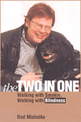

The author acquires a guide dog and a new identity
The author acquires a guide dog and a new identity


 The author acquires a guide dog and a new identity
The author acquires a guide dog and a new identity

|  |
The Two in OneWalking with Smokie, Walking with BlindnessRod Michalkopaper EAN: 978-1-56639-649-3 (ISBN: 1-56639-649-2) |
"The Two in One offers a fresh look at disability in western culture by reconsidering our traditional views about the human-animal bond. Along the way, Rod Michalko shows us how both he and guide dog Smokie learn to scan the far horizon."
—Stephen Kuusisto, author of Planet of the Blind
When Rod Michalko's sight finally became so limited that he no longer felt safe on busy city streets or traveling alone, he began a search for a guide. The Two-in-One is his account of how his search ended with Smokie, a guide dog, and a dramatically different sense of blindness.
Few people who regularly encountered Michalko in his neighborhood shops and cafes realized that he was technically blind; like many people with physical disabilities, he had found ways of compensating for his impairment. Those who knew about his condition thought of him as a fully realized person who just happened to be blind. He thought so himself. Until Smokie changed all that.
In this often moving, always compelling meditation on his relationship with Smokie, Michalko probes into what it means to be at home with blindness. Smokie makes no judgment about Michalko's lack of sight; it simply is the condition within which they work together. Their partnership thus allows Michalko to step outside of the conventional-and even "enlightened"-understanding of blindness; he becomes not simply resigned to it but able to embrace it as an essential part of his being in the world. Drawing on his training as a sociologist and his experience as a disabled person, Michalko joins a still small circle of scholars who examine disability from the inside.
More rare still-and what will resonate with most readers-is Michalko's remarkable portrayal of Smokie; avoiding sentimentality and pathos, it is a deeply affectionate yet restrained and nuanced appreciation of his behavior and personality. From their first meeting at the dog guide training school, Smokie springs to life in these pages as a highly competent, sure-footed, take-charge, full-speed-ahead, indispensable partner. "Sighties" are always in awe watching them work; Michalko has even persuaded some of them that the Smokester can locate street addresses-but has a little difficulty with odd numbers! Readers of The Two-in-One can easily imagine Rod and Smokie sharing the joke as they continue on their way.
Excerpt available at www.temple.edu/tempress
"This is a moving phenomenology of blindness, a provocative deconstruction of the culture/nature dichotomy, a telling analysis of the everyday construction of identity, and a compelling argument for the special 'insight' of marginality of various kinds."
—Spencer E. Cahill, University of South Florida
"Michalko, a sociologist, has written an insightful memoir of how, with the aid of his guide dog, Smokie, he came to fully inhabit his blindness. ...Michalko presents himself on many levels: the scientist considering the meanings of social behavior toward disability; the attentive pet-caretaker describing guide dog training and funny incidents that occur during his walks with Smokie; and finally, a down-to-earth intellectual who begins to forget—after decades of near-sightlessness—that he has a disability. He writes movingly about how, through his relationship with Smokie, he came to view blindness not just as a lack of sight but as something in itself, a condition with its own properties. In so doing, he invites us to rethink the very nature of disability."
—Publishers Weekly
"I would highly recommend this book, together with it's predecessor The Mystery of the Eye and the Shadow of Blindness (1998, University of Toronto Press), as exemplars of both politically engaged narrative writing and phenomenological accounts of disability."
—Canadian Journal of Sociology Online
Acknowledgments
1. Introduction
2. Search for a Guide
3. Is That One of Those Blind Dogs?
4. The Grace of Teaching
5. The Power of Reputation
6. Feel Free to Ask
7. The Two-in-One
Epilogue
Notes
Bibliography
Index
 | Rod Michalko is Adjunct Professor of Sociology, Department of Anthropology and Sociology, St. Francis Xavier University. |
Disability Studies
General Interest
Sociology
Animals, Culture, and Society, edited by Arnold Arluke and Clinton R. Sanders.
Animals, Culture, and Society, edited by Arnold Arluke and Clinton R. Sanders, is concerned with probing the complex and contradictory human-animal relationship through the publication of accessible books that consider the place of animals in our culture, our literature, our society, and our homes.
© 2015 Temple University. All Rights Reserved. This page: http://www.temple.edu/tempress/titles/1431_reg.html.